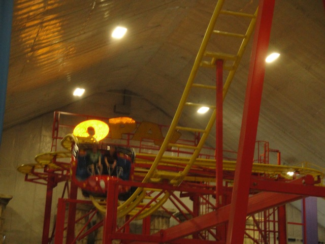
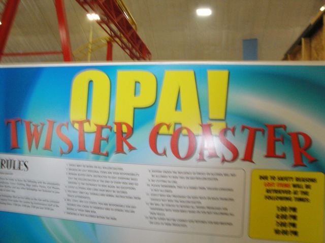

| |

Opa Review

For todays review, we're going to travel back in time to review Mt. Olympus' spinning mouse ride, Opa. We get into our cars and away we go. We roll through a turn and through some straight track and then head up the lifthill. You head off the lifthill and into a turn. And of course, as we're rolling through the upper set of switch backs, theres no spinning. Typical. Usually these things don't spin until the second half, but for some reason, the upper switchbacks on this thing are even slower than usual. After the switchbacks, you head into a small drop and back up the small hill. This is fun. We then head into the biggest drop of the ride. We gain some speed as we dip to the ground. We then head into some double up thing which sadly, but not suprisingly, has no airtime. We then jolt around another turn and head into the second set of switchbacks. Normally, we start spinning here. But here, the spinning is bad. Its just so f*cking slow. Its not even funny. During these entire switchbacks, we make about three revolutions. 3 revolutions within about 5 switchbacks. That is truely pathetic Mt. Olympus. I'd say shame on you, but there is so much else to be ashamed of that this is the least of your problems. Like the fact that someone actually managed to fall out on this ride. That's right. Someone actually fell out of the slowest barely-spinning mouse. That's why this peice of sh*t doesn't exist anymore. Now THAT is really something for you to be ashamed of. I hope the family files a BIG lawsuit against you. We then go through the final little dip and bump. Its not fun since we're not spinning, but we do get some uncomfortable laterals. After that, we rise up and turn into the final brakes. This had to have been the worst spinning mouse ever made. I mean, this thing was so bad that I'd rather ride freaking Pole Position over it. Even on a bad day, Pole Position is better than this peice of sh*t. It was slow, boring, uncomfortable, and while Mt. Olympus shockingly bought more than one train for it, they still only ran like two or three cars on a ride that should've run at least ten. Truely pathetic. Well now you can't get this credit. So you'll have to spend your time doing....uhh.....waiting in line for...Screw it. Leave Mt. Olympus and go do something else.
2/10
Location: Mt. Olympus
Opened: 2006
Closed: 2014
Built by: Zamperla
Last Ridden: August 14, 2010
I have ridden this exact same ride at the following parks.
American Fairs
Coney Island
Six Flags America
Six Flags Great America
Tivoli Friheden
Opa Photos

Home
|